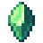

Far Away Stone
Jump to navigation
Jump to search
This page or section contains unmarked spoilers from update 1.6 of Stardew Valley. Players may want to avoid or be cautious toward reading this article/section. |
| Far Away Stone | |
|  | |
| A stone of unknown origins. Looks like it could be placed into something. | |
| Information | |
| Source | Floor 100 of The Mines • Volcano Caldera |
| Sell Price | |
The Far Away Stone is a secret item found by right-clicking with an Ancient Doll next to the lava pool in either level 100 of the Mines or in the Volcano Caldera. This can be done multiple times.
The Far Away Stone can be used to obtain the Meowmere by interacting with the Terraria pylon pedestal in the basement of the Wizard's Tower.
The Far Away Stone can also be sold through the Shipping Bin for  500g. It cannot be gifted to villagers.
500g. It cannot be gifted to villagers.
The player receiving the Far Away Stone from a Bone Serpent

The pedestal in the Wizard's Basement
Notes
- Simply dragging the Ancient Doll out of inventory will not work.
- It is more profitable to get a Far Away Stone from an Ancient Doll and sell that then selling the Ancient Doll directly. This results in a profit of
 440g, or 320g with the power obtained from the Treasure Appraisal Guide.
440g, or 320g with the power obtained from the Treasure Appraisal Guide.
Trivia
- The method of obtaining the Far Away Stone is a reference to summoning one of the bosses in Terraria, which also requires dropping a doll item into lava.
- Once placed on the plant pedestal, it resembles the Forest Pylon from Terraria.
History
- 1.6: Introduced.